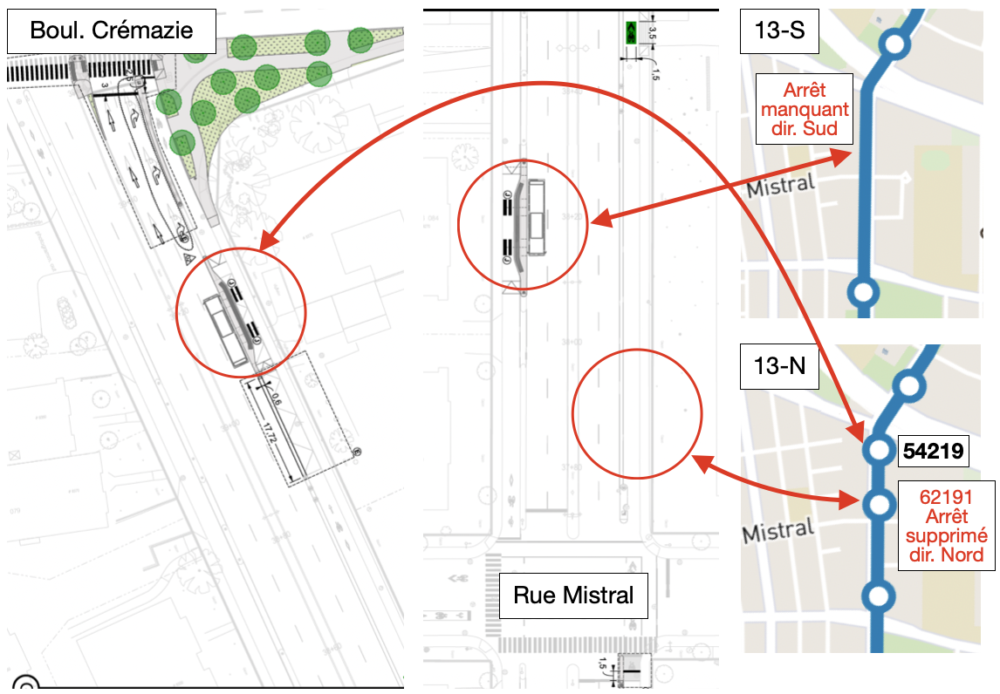

Sur l’avenue Christophe-Colomb, il semble y avoir une erreur de planification autour de la rue Mistral. L’arrêt Christophe-Colomb / Mistral devra plutôt se situer sur le trajet en direction sud, et non en direction nord. Les plans sont tirés de l’appel d’offre SEAO et correspondent également aux images récentes Google Streetview.
